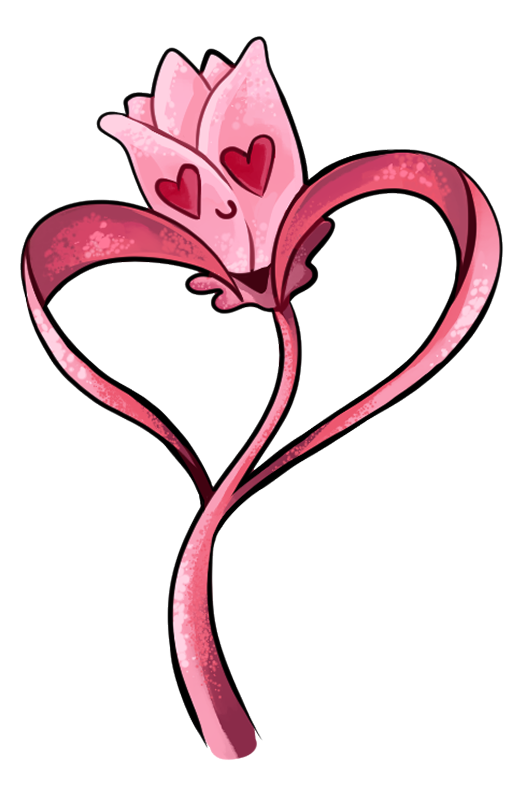

Amor

O que é o amor?
De todas as emoções, talvez o amor seja a mais contraditória. Pode provocar em nós um sorriso gigantesco ou uma cascata e lágrima.
É um sentimento puro e quentinho!
Que tipo de amor há?
• Amor romântico: quando pensas constantemente na mesma pessoa... ao a veres provoca em ti uma mistura de nervos e energia!
• Amor diligente: quando fazes tuas a alegria ou a tristeza da pessoa que amas e, além disso, desejas-lhe sempre o melhor.